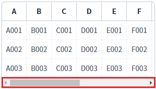
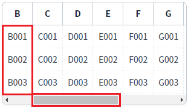
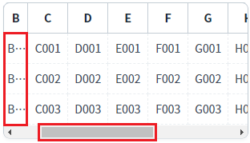
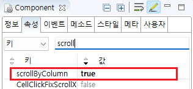

GridView의 'scrollByColumn' 속성을 'true'로 설정하여 가로 스크롤이 이동될 때 컬럼 단위로 이동하도록 설정한 예제입니다.
속성의 설정 값에 따른 동작은 다음과 같습니다.
true : 컬럼 단위로 표시
false : [default] 컬럼이 줄어들면서 표시
가로 스크롤 이동 시 컬럼 단위로 표시
(기본 설정) 가로 스크롤 이동 시 컬럼의 너비(width)가 줄어들면서 표시
GridView의 가로 스크롤을 좌우로 이동하면서 컬럼의 표시 방식을 비교합니다.
1
STEP 1: 초기 상태를 확인합니다.
예제 영역 '가로 스크롤 이동 시 컬럼 단위로 표시'에 구성된 GridView를 확인합니다.
GridView에 가로 스크롤이 표시된 상태입니다.Image 1.브라우저(Chrome) 실행 예시

2
STEP 2: 가로 스크롤을 오른쪽으로 이동합니다.
3
STEP 3: 실행된 결과를 확인합니다.
스크롤 이동 시 컬럼의 너비(width)가 유지되면서 컬럼 단위로 GridVeiw가 표시됩니다.
Image 2.브라우저(Chrome) 실행 예시

1
STEP 1: 초기 상태를 확인합니다.
예제 영역 '(기본 설정) 가로 스크롤 이동 시 컬럼의 너비(width)가 줄어들면서 표시'에 구성된 GridView를 확인합니다.
GridView에 가로 스크롤이 표시된 상태입니다.Image 3.브라우저(Chrome) 실행 예시
2
STEP 2: 가로 스크롤을 오른쪽으로 이동합니다.
3
STEP 3: 실행된 결과를 확인합니다.
스크롤 이동 시 컬럼의 너비(width)가 줄어들면서 GridVeiw가 표시됩니다.
Image 4.브라우저(Chrome) 실행 예시

1
GridView의 속성을 정의합니다.
[필수] scrollByColumn="true"
(옵션 설명)
- true : 컬럼 단위로 표시
- false : [default] 컬럼이 줄어들면서 표시
Image 5.웹스퀘어 스튜디오의 Component View - 속성 설정 예시

Example 1.Source
<w2:gridView scrollByColumn="true" > <!-- 중략 --> </w2:gridView>
scrollByColumn